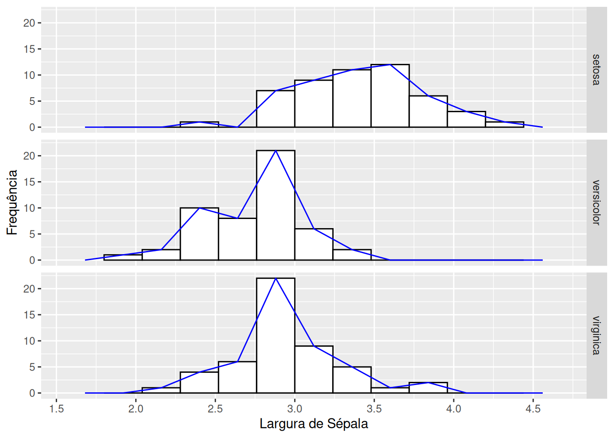
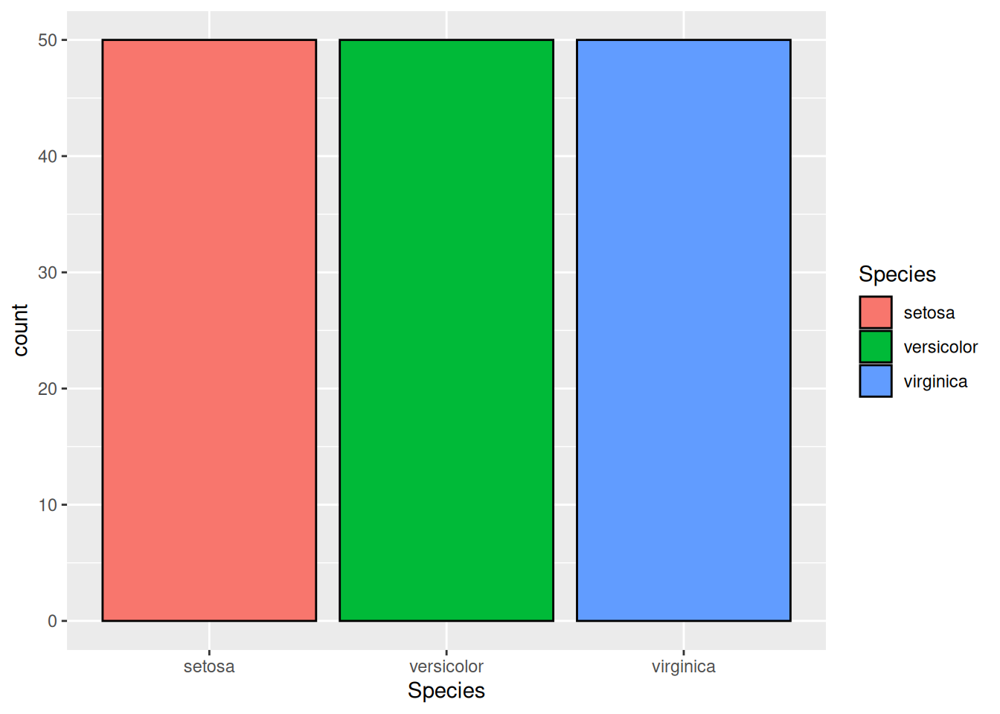
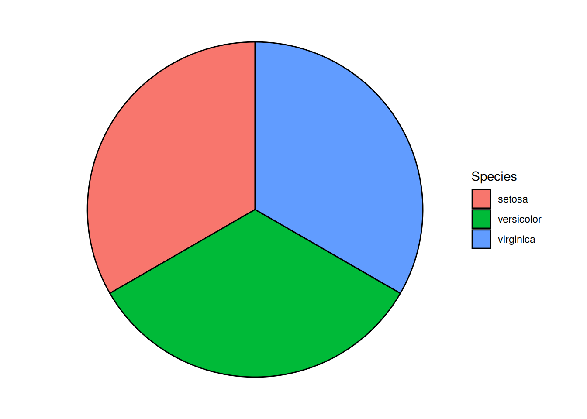
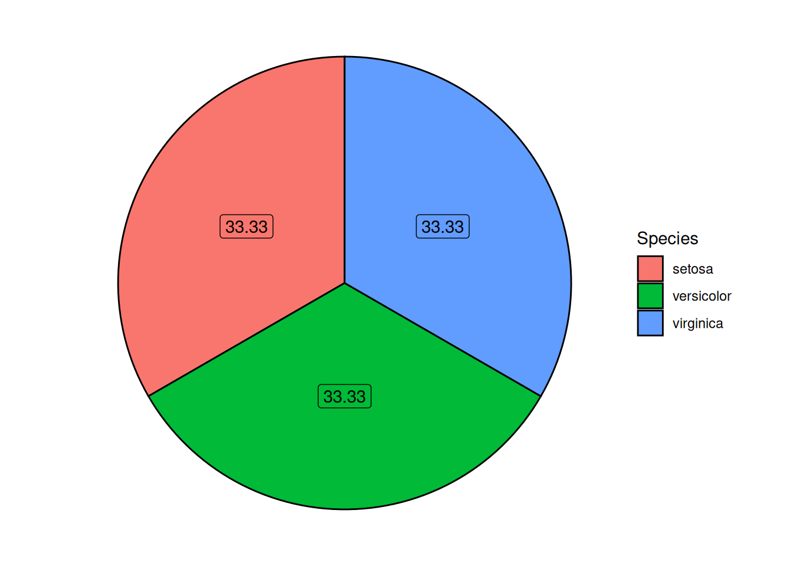
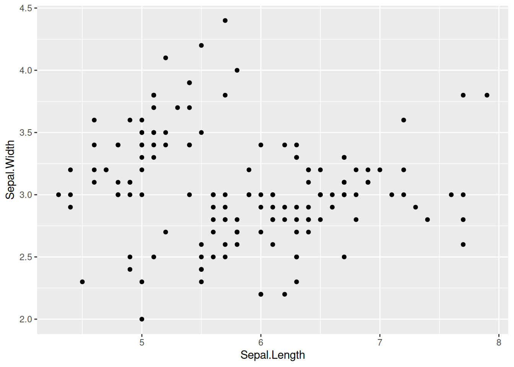
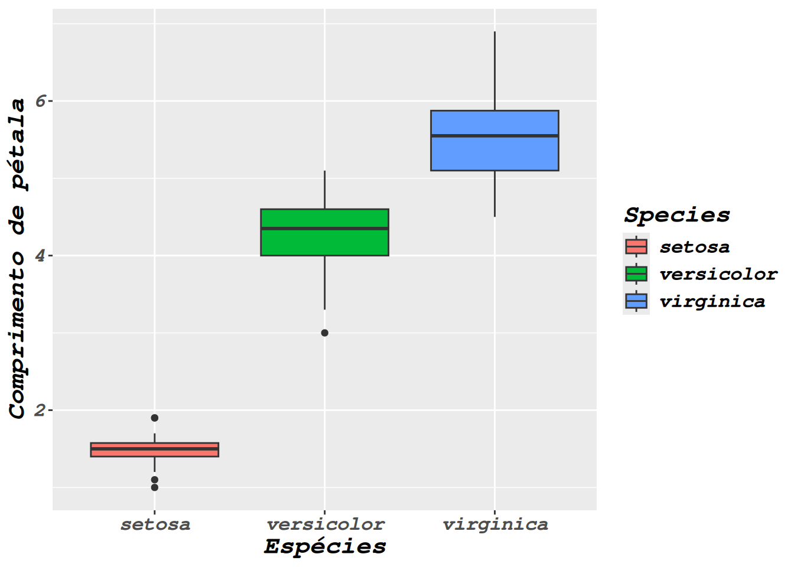

options(repos = c(CRAN = "https://cloud.r-project.org"))Introdução ao ggplot2
Introdução
O ggplot2 é um pacote de código aberto para a visualização gráfica de dados para a linguagem de programação R. Foi criada por Hadley Wickham em 2005, sendo uma implementação do livro Grammar Graphics de Leland Wilkison também lançado em 2005.
Ele aborda que visualização gráfica dos dados pode ser divida em componentes semânticos, como escalas e camadas.
Por que usar o ggplot2?
Alta costumização gráfica.
Alta diversidade de modelos de gráficos.
Integração com outros pacotes do tidyverse, como por exemplo
dplyr,forcatse oplotly.Criação de gráficos a partir de camadas, podendo sobrepor diferentes gráficos.
Como instalar o ggplot2?
#instalando pacote ggplot2
install.packages("ggplot2")
#instalando dplyr, forcats e patchwork
install.packages("dplyr")
install.packages("forcats")
install.packages("patchwork")Para usar o ggplot2 em seus scripts tem que carrega-lo
#Carregando o pacote ggplot2
library(ggplot2)
#Carregando dplyr, forcats e patchwork
library(dplyr)
library(forcats)
library(patchwork)Banco de dados iris
Para essa oficina será utilizado bancos de dados iris.
iris - é referente tamanho de pételas e sepalas de 3 espécies do gênero Iris do trabalho de Fisher em 1936 (Iris setosa,Iris versicolor e Iris virginica)
data(iris)
head(iris) Sepal.Length Sepal.Width Petal.Length Petal.Width Species
1 5.1 3.5 1.4 0.2 setosa
2 4.9 3.0 1.4 0.2 setosa
3 4.7 3.2 1.3 0.2 setosa
4 4.6 3.1 1.5 0.2 setosa
5 5.0 3.6 1.4 0.2 setosa
6 5.4 3.9 1.7 0.4 setosaBox-plot
1- escrevemos iris - para indicar qual banco de dados estamos trabalhando
2- usamos o simbolo de pipe %>% para indicar que função futura vai ser utilizada com esse banco de dados
3- usamos a função ggplot() para iniciar a criação de nosso gráfico
4- dentro da função ggplot() será inserido a função aes(), nela será definido os fatores estéticos (aesthetic) do gráfico. Como que variável vai estar no eixo x, eixo y, na cor de preenchimento, etc.
5- é usado o símbolo de “+” na sintaxe para acrescentar camadas e alterações no gráfico, como legendas e alteração na escala dos eixos.
6- sempre para gerar alguma forma “geométrica” no gráfico, como colunas, box-plots, curvas, texte, entre outras, será utilizado geom_"forma geométrica", neste caso será utilizado o geom_boxplot
iris%>%ggplot(aes(x=Species, y=Petal.Length))+geom_boxplot()
iris poderia estar dentro de ggplot, como o primeiro argumento da função, se a necessidade de usar pipe %>%, segue o exemplo abaixo
Obs.: pode se indicar o data frame através de data=iris dentro da função ggplot()
ggplot(iris,aes(x=Species, y=Petal.Length))+geom_boxplot()
Mudando cores de preenchimento no ggplot
Uma das formas de acrescentar cor ao gráfico é adicionando o argumento fill dentro da função aes(). Indicará ao ggplot que você quer que as cores de preenchimentos do ggplot mude de acordo com alguma variável de seu data frame.
iris%>%ggplot(aes(x=Species, y=Petal.Length, fill=Species))+geom_boxplot()
Há várias maneiras de fazer isso, irei demonstrar algumas ao longo da oficina.
Por exemplo na linha de código abaixo foi acrescentado o argumento fill dentro da função geom_boxplot().Nesse argumento usei a função de contatenar (c()), para denominar as três cores desejadas para o gráfico. Note que os nomes das cores estão escritos entre aspas ““. Ao invés de colocar nome de cores em inglês, pode-se colocar o código RGB hexadecimal da cor, como #4287f5.
Atenção se queremos que as cores sejam diferenciadas de acordo com algum fator, ou variável nominal de nosso data.frame, temos que indicar dentro do aes(). Como fill para mudar o preenchimento, colour para mudar o contorno, e shape para mudar formato (caso esteja trabalhando com gráficos possuem pontos).
Note: quando colocamos as cores escolhidas dentro da forma geométrica (geom_), não será gerado legenda.
iris%>%ggplot(aes(x=Species, y=Petal.Length))+geom_boxplot(fill=c("lightpink","lightgreen","lightblue"))
A outra forma é delimitar através da função scale_fill_manual(), esse comando serve para alterar os parâmetros de fill. Nele foi utilizado values = c() para concatenar as cores escolhidas.
iris%>%ggplot(aes(x=Species, y=Petal.Length, fill=Species))+geom_boxplot()+scale_fill_manual(values=c("#704c41","#41704f","#584170"))
Mudando cores de contorno no ggplot
O mesmo processo poderia ser feito igual ao fill, porém utilizando o comando color. Esse paramêtro também pode ser utilizado para diferenciar algunciar algum fator do data frame, apenas colocando dentro do aes(color="coluna do data.frame"). Nesse caso foi colocado dentro da função geom_boxplot(), e coloquei o contorno do boxplot na cor marrom.
iris%>%ggplot(aes(x=Species, y=Petal.Length, fill=Species))+geom_boxplot(fill=c("lightblue","lightgreen","lightpink"), color="brown")
Alterando elementos textuais no ggplot
Os nomes dos eixos são alterados pela função labs, onde você indica qual elemento gráfico você quer renomear. Lembre-se: o nome que você quer renomear tem que estar entre aspas ” “.
- y para alterar o título do eixo y.
- x para alterar o título do eixo x.
- title para alterar o título ou acrescentar um título.
- subtitle para alterar o subtítulo ou acrescentar um subtítulo.
- fill para alterar o título da legenda referente ao fator colocado no fill.
- color para alterar o título da legenda referente ao fator colocado no color.
- shape para alterar o título da legenda referente ao fator colocado no shape.
- size para alterar o título da legenda referente ao fator colocado no size.
#| echo: true
iris%>%ggplot(aes(x=Species, y=Petal.Length, fill=Species))+geom_boxplot(fill=c("lightblue","lightgreen","lightpink"), color="brown")+labs(y="Comprimento de pétala", x="Espécies", title="Comparação de comprimento de pétalas", subtitle = "Banco de dados iris")
Alterando a fonte
Para alterar o tipo fonte do gráficos é necessário usar o pacote extrafont. Abaixo estará os comandos para instalar o pacote e carrega-lo.
# Instalando o pacote extrafont
install.packages("extrafont")
#Carregando o pacote extrafont
library(extrafont)
#Carregando as fontes presentes no computador
loadfonts(device="all")Aqui alteramos as fontes através do comando theme() este comando altera elementos temáticos do gráfico, como por exemplo fontes, tamanhos, cor de fundo, entre outros. Neste exemplo colocamons o argumento text = element_text(). Dentro dele vai alguns argumentos:
- face é para definir se a fonte estará em itálico (
"italic"), negrito ("bold") ou ambos ("italic.bold") - family é para definir se o tipo de fonte. Esse argumento pode ter variações de acordo com sistema operacional do computador. Em sistema windows pode-se utilizar
"TT Times New Roman","Arial", etc. Enquanto em sistemas Linux e MacOS estarão"serif","mono", etc. - size é para definir se o tamanho da fonte.
Obs.: esses elementos são importantes para garantir boa visualização gráfica e seguir padrões gráficos de publicações ou revistas.
iris%>%ggplot(aes(x=Species, y=Petal.Length, fill=Species))+geom_boxplot()+labs(y="Comprimento de pétala", x="Espécies")+theme(text = element_text(face="bold", family="serif"))
iris%>%ggplot(aes(x=Species, y=Petal.Length, fill=Species))+geom_boxplot()+labs(y="Comprimento de pétala", x="Espécies")+theme(text = element_text(face = "bold.italic", family="mono", size=16))
iris%>%ggplot(aes(x=Species, y=Petal.Length, fill=Species))+geom_boxplot()+labs(y="Comprimento de pétala", x="Espécies")+theme(text = element_text(face="italic"))
As vezes é necessário colocar nomes em itálico, como por exemplo nomes de espécies que estão no eixo x. Com isso dentro de theme() colocaremos o arguemento axis.text.x = element_text(face="italic") se referindo que estaremos trabalhando com o texto presente na escala do eixo x. Caso fosse no eixo y seria axis.text.y. Essa alteração também pode ser aplicada à outros parâmetros, como fill e color. Trabalhando assim, podemos alterar a fonte apenas daquele parâmetro.
iris%>%ggplot(aes(x=Species, y=Petal.Length, fill=Species))+geom_boxplot()+labs(y="Comprimento de pétala", x="Espécies")+theme(axis.text.x = element_text(face="italic"))A seguir há o exemplo de deixar o título em negrito com maior destaque, utilizando o argumento plot.title = element_text(face="bold")
iris%>%ggplot(aes(x=Species, y=Petal.Length, fill=Species))+geom_boxplot()+labs(y="Comprimento de pétala", x="Espécies", fill="Espécies", title="Aqui é o título")+theme(axis.text.x = element_text(face="italic"), plot.title = element_text(face="bold"))
Manipulação da legenda
Caso queremos tirar a legenda ou alterar a posição da legenda, utilizaremos o argumento legend.position =:
“none” para tirar a legenda
“top” para a legenda ficar em cima
“bottom” para a legenda ficar em baixo
“left” para a legenda ficar na esquerda
“right” para a legenda ficar na direita
iris%>%ggplot(aes(x=Species, y=Petal.Length, fill=Species))+geom_boxplot()+labs(y="Comprimento de pétala", x="Espécies", fill="Espécies", title="Aqui é o título")+theme(axis.text.x = element_text(face="italic"), plot.title = element_text(face="bold"), legend.position = "none")
iris%>%ggplot(aes(x=Species, y=Petal.Length, fill=Species))+geom_boxplot()+labs(y="Comprimento de pétala", x="Espécies", fill="Espécies", title="Aqui é o título")+theme(axis.text.x = element_text(face="italic"), plot.title = element_text(face="bold"), legend.position = "top")
iris%>%ggplot(aes(x=Species, y=Petal.Length, fill=Species))+geom_boxplot()+labs(y="Comprimento de pétala", x="Espécies", fill="Espécies", title="Aqui é o título")+theme(axis.text.x = element_text(face="italic"), plot.title = element_text(face="bold"), legend.position = "bottom")
iris%>%ggplot(aes(x=Species, y=Petal.Length, fill=Species))+geom_boxplot()+labs(y="Comprimento de pétala", x="Espécies", fill="Espécies", title="Aqui é o título")+theme(axis.text.x = element_text(face="italic"), plot.title = element_text(face="bold"), legend.position = "left", legend.text = element_text(face="italic"))Anotação me gráfico
iris%>%ggplot(aes(x=Species, y=Petal.Length, fill=Species))+geom_boxplot()+labs(y="Comprimento de pétala", x="Espécies", fill="Espécies", title="Aqui é o título")+theme(axis.text.x = element_text(face="italic"), plot.title = element_text(face="bold"), legend.position = "left", legend.text = element_text(face="italic"))+ geom_text(x = 2.5, y = 4, label = "Ponto importante", color = "red", face="bold")Warning in geom_text(x = 2.5, y = 4, label = "Ponto importante", color = "red",
: Ignoring unknown parameters: `face`
iris%>%ggplot(aes(x=Species, y=Petal.Length, fill=Species))+geom_boxplot()+labs(y="Comprimento de pétala", x="Espécies", fill="Espécies", title="Aqui é o título")+theme(axis.text.x = element_text(face="italic"), plot.title = element_text(face="bold"), legend.position = "left", legend.text = element_text(face="italic"))+ geom_text(x = 2.5, y = 4, label = "Ponto importante", color = "red")+ annotate("vline", x = 2, xintercept = 2, linetype = "dashed", color = "blue")Warning: `geom` must not be "vline".
ℹ Please use `geom_vline()` directly instead.Warning in annotate("vline", x = 2, xintercept = 2, linetype = "dashed", :
Ignoring unknown aesthetics: x
iris%>%ggplot(aes(x=Species, y=Petal.Length, fill=Species))+geom_boxplot()+labs(y="Comprimento de pétala", x="Espécies", fill="Espécies", title="Aqui é o título")+theme(axis.text.x = element_text(face="italic"), plot.title = element_text(face="bold"), legend.position = "left", legend.text = element_text(face="italic"))+ geom_text(x = 2.5, y = 4, label = "Ponto importante", color = "red")+annotate("text", x = 1, y = 3.5, label = "outro ponto", color = "blue")